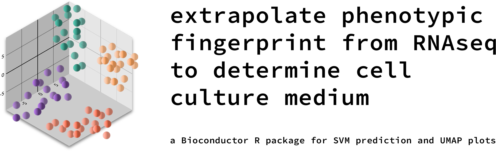

Build and Apply Transcriptomic Fingerprints for Cell Culture Media Prediction
scCulturePredict is an R package that provides dual functionality for cell culture media prediction from single-cell transcriptomic data. BUILD mode generates transferable transcriptomic fingerprints from labeled training data, while PREDICT mode applies these pre-built fingerprints to unlabeled datasets for culture condition prediction.

Features
BUILD Mode (Generate Fingerprints)
- Train on labeled single-cell datasets
- Generate transferable transcriptomic fingerprints using KEGG pathway analysis
- Train both similarity-based and SVM prediction models
- Evaluate model performance with cross-validation
- Save fingerprints and models for future predictions
Installation
From Bioconductor (currently under review)
if (!requireNamespace("BiocManager", quietly = TRUE))
install.packages("BiocManager")
BiocManager::install("scCulturePredict")From GitHub (development version)
# install.packages("devtools")
devtools::install_github("nccb/scCulturePredict")Quick Start
BUILD Mode: Generate Fingerprints from Labeled Data
library(scCulturePredict)
# Build fingerprints from labeled training data
training_results <- scumap(
data_dir = "./DATA_labeled",
kegg_file = "kegg_file",
output_dir = "./training_results",
mode = "build",
experiment_id = "training",
progress = TRUE,
verbose = TRUE
)
# Access training results
fingerprint_file <- training_results$fingerprint_file
training_accuracy <- training_results$evaluation_results$overall_accuracy
print(paste("Training accuracy:", training_accuracy))PREDICT Mode: Apply Fingerprints to New Data
# Apply fingerprints to unlabeled data
prediction_results <- scumap(
data_dir = "./DATA_unlabeled",
output_dir = "./prediction_results",
mode = "predict",
fingerprint_file = fingerprint_file,
experiment_id = "predictions",
progress = TRUE,
verbose = TRUE
)
# Access predictions
predictions <- prediction_results$seurat_object$classification_pred
confidence_scores <- prediction_results$seurat_object$prediction_confidence
# View results
head(data.frame(
cell_barcode = colnames(prediction_results$seurat_object),
predicted_medium = predictions,
confidence = confidence_scores
))Complete Workflow Example
# Step 1: Build fingerprints (training phase)
training_results <- scumap(
data_dir = "./DATA_labeled",
kegg_file = "sce00001.keg",
output_dir = "./results/training",
mode = "build"
)
# Step 2: Apply to new data (prediction phase)
prediction_results <- scumap(
data_dir = "./DATA_unlabeled",
output_dir = "./results/predictions",
mode = "predict",
fingerprint_file = training_results$fingerprint_file
)
# Check prediction confidence
summary(prediction_results$seurat_object$prediction_confidence)
table(prediction_results$seurat_object$classification_pred)Advanced Usage
For users who need more control over individual steps:
# Step-by-step approach
data_dir <- system.file("extdata", "example_data", package = "scCulturePredict")
seurat_object <- load_data(data_dir, experiment_id = "example")
seurat_object <- preprocess_data(seurat_object)
seurat_object <- reduce_dimensions(seurat_object)
# Continue with pathway analysis and predictions...Documentation
Comprehensive documentation is available in the package:
-
vignette("scCulturePredict-introduction")- Introduction to scCulturePredict -
vignette("scCulturePredict-visualization")- Visualisation guide -
vignette("scCulturePredict-advanced")- Advanced usage
Code Quality
scCulturePredict implements several code quality measures to ensure robustness and maintainability:
Linting
The package uses lintr for static code analysis. To run linting checks:
# Install lintr if needed
# install.packages("lintr")
# Run linting on the package
lintr::lint_package()A .lintr configuration file is included in the package root.
Code Formatting
Code formatting follows the Bioconductor style guidelines and is enforced using styler:
# Install styler if needed
# install.packages("styler")
# Apply styling to the package
styler::style_pkg(style = styler::tidyverse_style(indent_by = 2))Development
Contributing
Contributions are welcome! Please feel free to submit a Pull Request.
- Fork the repository
- Create your feature branch (
git checkout -b feature/amazing-feature) - Run the code quality checks (
Rscript scripts/check_package.R) - Commit your changes (
git commit -m 'Add some amazing feature') - Push to the branch (
git push origin feature/amazing-feature) - Open a Pull Request